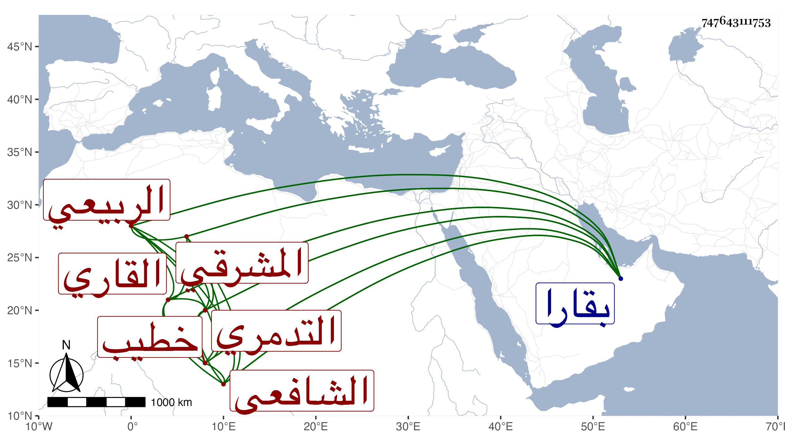

0902Sakhawi.DawLamic.ITO20230111-ara1.EIS1600.747643111753
Biography ID: 747643111753
875
عبد الكريم بن محمد بن محمود بن أبي بكر بن صديق بن علي بن غازي بن ثابت بن ثابت بن بركات النجم أبو الجود بن الشمس بن الصدر الربيعي المشرقي الأصل ثم التدمري ثم القاري الشافعي ويعرف بابن صفي الدين خطيب جامع قارا كأبيه وجده ، ولد في يوم الاثنين رابع رمضان سنة اثنتين وسبعين وسبعمائة بقارا ، ولقيه ابن فهد فذكر له أنه قرأ على البدر محمد بن إبراهيم بن العصياتي نصف صحيح البخاري في سنة عشرين بسماعه له من ابن فرعون وغيره عن الحجار وأنه قرأ جميعه على النور بن خطيب الدهشة وأنه أجاز له الشهب ابن حجي والحسباني وابن نشوان والشرف بن الزفتاوي ، وحدث قرأ عليه ناصر الدين بن زريق ثلاثيات البخاري بقارا في سنة سبع وثلاثين ومات .
